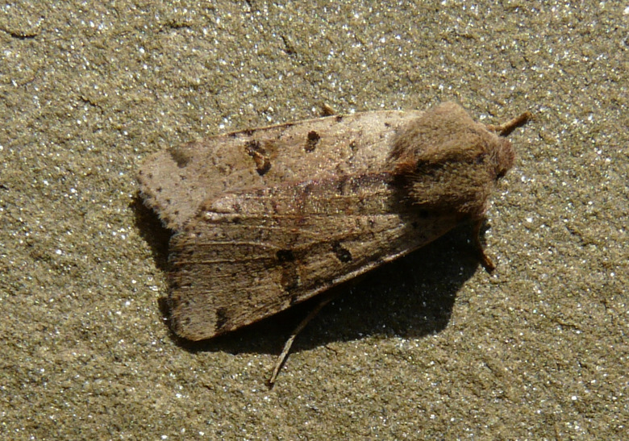
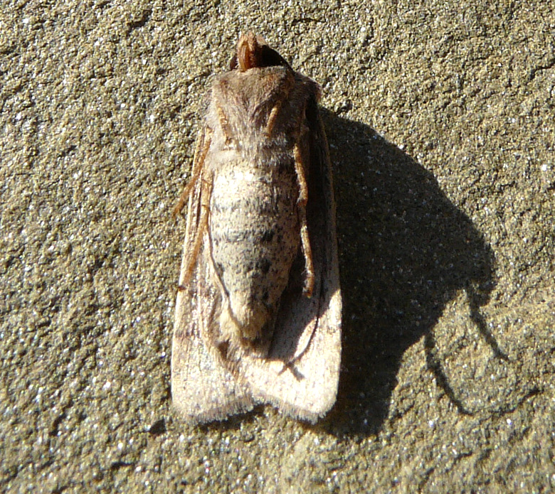
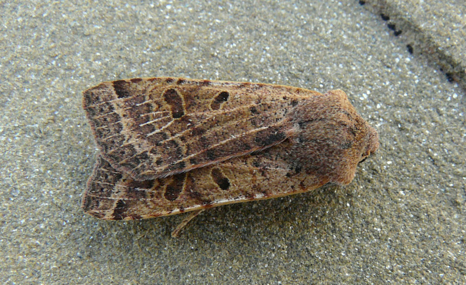
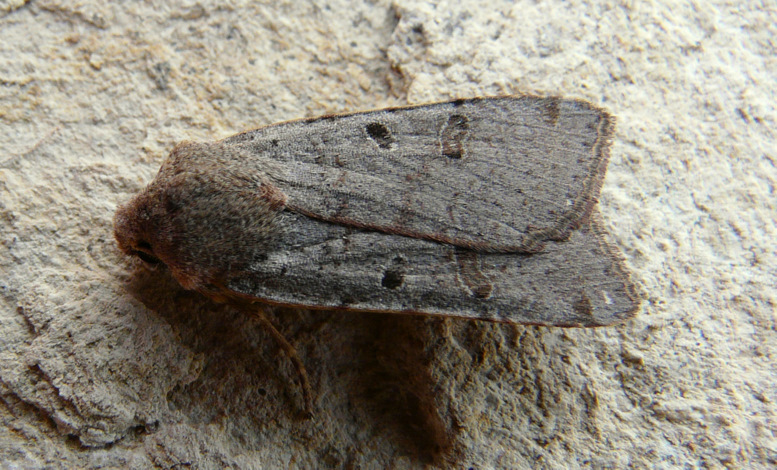
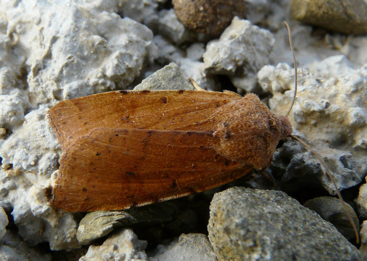
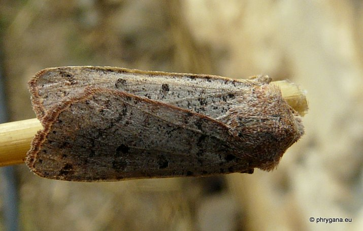
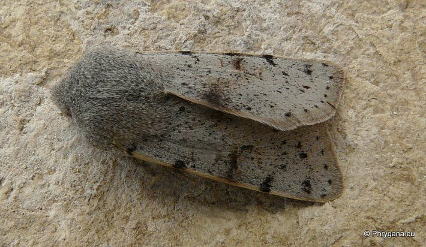

| PHRYGANA | Fauna | Flora | Galles | liste des espèces |
contact -
info - commentaires phrygana1 (at) gmail.com |
| Particularités crétoises | nouveautés | Mines | ressources naturelles |
| Agrochola lychnidis lychnidis (Denis & Schiffermuller 1775) |
| 75 | Fauna | NOCTUIDAE | Noctuinae | Agrochola Hubner 1821 |
 Agrochola lychnidis Melambes (Agios Giorgos) 21 décembre 2009 |
| Beaded chestnut -- la Noctuelle de la lychnide -- Veränderliche Herbsteule | |
| Envergure: 30 - 36 mm. | |
| Aile antérieure très légèrement pointue, avec la réniforme étroite et l'orbiculaire petite, allongée et souvent très foncée. Couleur de fond généralement brun châtaigne à brun rougeâtre, mais aussi beige clair, jaune grisâtre jusqu'au brun foncé | |
| Chenille: nocturne et polyphage (nombreuses plantes dont des Caryophyllaceae, Rosaceae, Trifolium sp.); elle se nourrit au début sur des palntes herbacées basses, mais ensuite peut consommer des feuilles d'arbres et arbustes | |
| Elle forme un cocon souterrain, dans lequel elle se nymphose. | |
| Espèce univoltine. | |
| Période de vol: octobre novembre décembre janvier février mars. Agrochola lychnidis hiverne à l'état adulte. | |
| Statut en Crète: indigène | |
| Biotopes en Crète: phrygana, olivaies, garrigue, bords de chemins. | |
| Distribution: Europe (surtout centrale et méridionale). | |
| Note: vient à la lumière | |
|
 Agrochola lychnidis Melambes (Agios Giorgos) 21 décembre 2009 |
|
 Agrochola lychnidis Melambes (Agios Giorgos) 15 janvier 2010 |
|
 Agrochola lychnidis Melambes (Agios Giorgos) 07 décembre 2009 |
|
 Agrochola lychnidis Melambes (Agios Giorgos) 10 janvier 2010 |
|
 Agrochola lychnidis Melambes (Agios Giorgos) 31 décembre 2011 |
|
 Agrochola lychnidis Melambes (Agios Giorgos) 28 février 2011 |
| 15 juillet 2013 |
| © paul fontaine -- © Phrygana.eu 2007 -- 2013 |